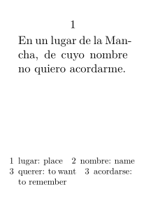

Syntax (autogenerated)
| \setuplinenote[...,...][...=...,...] | |
| [...,...] | name |
| compress | yes no |
| compressmethod | separator stopper space |
| compressseparator | command |
| compressdistance | dimension |
| compressstopper | command |
| ...=...,... | inherits from \setupnote |
Syntax
| \setuplinenote[...][...] | |
| [...] | name |
| [...] | setups, see \setupfootnotes |
Description
Set up linenotes. See \setupfootnotes for the options available.
Example
-
\setuppapersize[A9] \definelinenote[lnote] \setuplinenote[lnote][rule=off,paragraph=yes,numbercommand=,inbetween=\qquad] \setupdescriptions[lnote][display=yes,location=serried,distance=1em] \starttext \startlinenumbering En un lugar\lnote{lugar: place}\ de la Mancha, de cuyo nombre\lnote{nombre: name}\ no quiero\lnote{querer: to want}\ acordarme\lnote{acordarse: to remember}. \stoplinenumbering \stoptext
- 
See also
- \definelinenote to create a new line note type
- \setupdescriptions to set up description environments in general. Line notes (at least the textual part) are implemented as descriptions.
- strc-lnt.mkvi , strc-lnt.mkii
- strc-not.mkvi for the underlying mechanism
Help from ConTeXt-Mailinglist/Forum
All issues with: